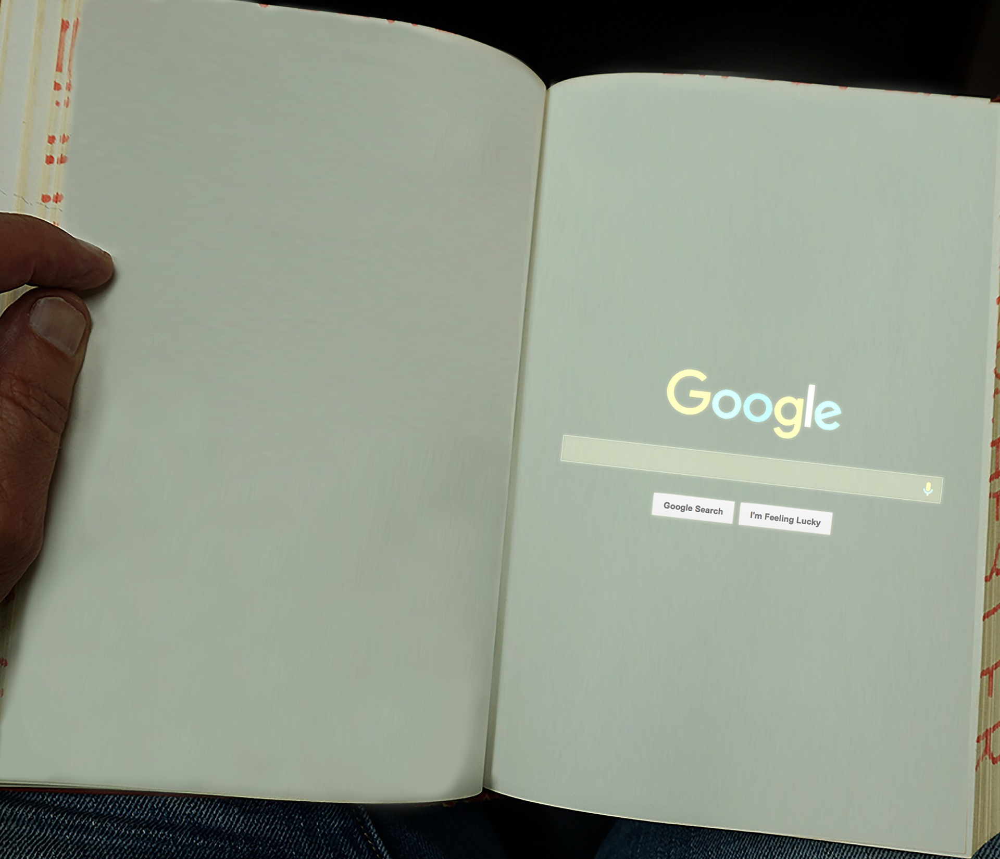

Envision UC Davis: Artifacts from the Future
Software Used: Adobe Illustrator, Adobe Photoshop
Envision UC Davis in February 2016 was my school’s largest community outreach initiative ever. Participants encompassed a wide range of demographic profiles, all tasked with the same prompt: to conjure up imaginative predictions about what the future might be like, especially in context of higher education and the overall university experience. Prior to launch, more than 2K individuals pre-registered for access to the initiative's web-based platform. My participation and subsequent contributions to the event were a lucky coincidence, brought about by my having stumbled into the program directors while studying on my own time in Shields Library. Inspired by the digital medium through which this massive community outreach initiative was being conducted and the largely analogue physical space in which I was situated at the time, I decided to combine the two subjects in this raster production. Responding to the prompt of imaginative futures from Envision UC Davis, this work explores the possibilities of what reintegrating traditional, analog research mediums with newfound technologies might look like in times ahead.